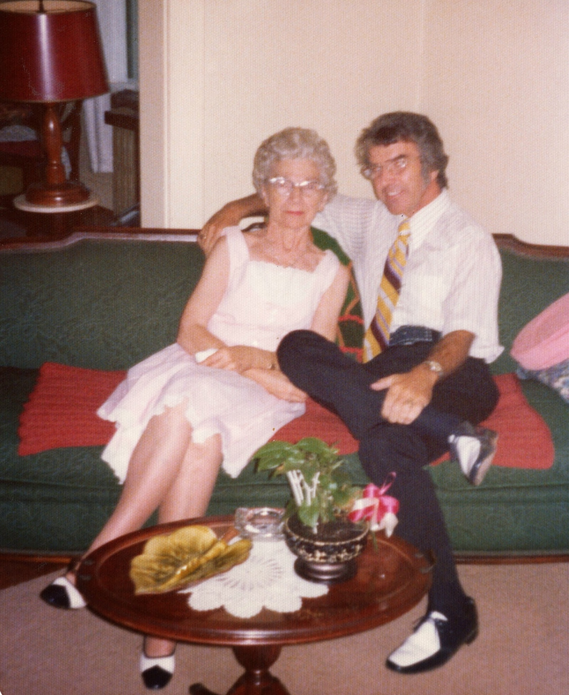

Eugene Lee Webster
1921–1998
Life Events
Born: 1921
Family
Father: William Gabriel Snead Webster
Mother: Addie Leola Daniel
Siblings
Military Service
No military service information has been added.
Biography
Eugene Lee Webster was born in 1921, the son of William Gabriel Snead Webster and Addie Leola Daniel. He died in 1998.
Photos

Sources
-
1930 United States Federal Census – Vernon and Florence Adams Families
Type: censusThe Fifteenth Census of the United States, 1930, records two related Adams households on Linwood Avenue in Baltimore City, Maryland, enumerated April 4, 1930. Lines 18–21 list Vernon L. Adams (age 30), his wife Florence Adams (age 26), their son Lee Adams (age 6), and Eugene Webster (age 8), Florence's younger brother. Eugene's relationship is recorded as 'Brother' in the census. The immediately following household, beginning on line 22, lists John H. Adams (age 71) and his wife Chessie Adams (age 67), identified through family information as the parents of Vernon L. Adams. The census documents Eugene Webster residing with his older sister Florence and her family following the death of their mother, Addie Leola Daniel Webster, in 1922. The two Adams households were enumerated consecutively, providing evidence that Florence and Vernon lived next to Vernon's parents.
Location: Linwood Avenue, Baltimore City, Maryland, United States
Supports: Vernon L. Adams and Florence Adams were living together in Baltimore City in April 1930., Vernon L. Adams was recorded as 30 years old., Florence Adams was recorded as 26 years old., Lee Adams was recorded as their six-year-old son., Eugene Webster was recorded as eight years old and living in Florence and Vernon's household., The census records Eugene's relationship as Brother., John H. Adams and Chessie Adams were recorded in the immediately following household., John H. Adams was recorded as 71 years old and Chessie Adams as 67 years old., The two Adams households were enumerated consecutively on Linwood Avenue.
-
1940 United States Federal Census – Vernon and Florence Adams Family
Type: censusThe Sixteenth Census of the United States, enumerated April 6, 1940, records the household of Vernon L. Adams (age 40), his wife Florence M. Adams (age 36), their sons Vernon L. Adams Jr. (age 16) and Kenneth W. Adams (age 9), and Florence's younger brother Eugene Lee Webster (age 18). The family was residing in Baltimore City, Maryland. The census indicates that the household members were living in the same house in 1935. Eugene had also been recorded living with Florence and Vernon in the 1930 census, documenting his continued residence with his older sister's family. The precise street address remains to be verified.
Location: Baltimore City, Maryland, United States
Supports: Vernon L. Adams and Florence M. Adams were living together in Baltimore City in April 1940., Vernon L. Adams was recorded as 40 years old., Florence M. Adams was recorded as 36 years old., Vernon L. Adams Jr. was recorded as 16 years old., Kenneth W. Adams was recorded as 9 years old., Eugene Lee Webster was recorded as 18 years old in the Adams household., Eugene Webster was living with his older sister Florence and her family in both 1930 and 1940., The census reports that the household members lived in the same house in 1935.
-
1950 United States Federal Census – Vernon and Florence Adams Family
Type: censusThe Seventeenth Census of the United States, enumerated April 19, 1950, records the household of Vernon L. Adams (age 50), his wife Florence M. Adams (age 46), their son Kenneth W. Adams (age 19), and Florence's younger brother Eugene Lee Webster (age 28), beginning on line 6. The family was residing on Elsrode Avenue in Baltimore City, Maryland. Eugene had previously been recorded in Florence and Vernon's household in the 1930 and 1940 federal censuses. These three census records document Eugene's residence with his older sister's family over a period spanning twenty years, although they do not establish continuous residence throughout that period. The 1950 census also provides evidence that the Adams family was living on Elsrode Avenue by April 1950.
Location: Elsrode Avenue, Baltimore City, Maryland, United States
Supports: Vernon L. Adams and Florence M. Adams were living together in Baltimore City on April 19, 1950., Vernon L. Adams was recorded as 50 years old., Florence M. Adams was recorded as 46 years old., Kenneth W. Adams was recorded as 19 years old and identified as their son., Eugene Lee Webster was recorded as 28 years old in the Adams household., Eugene Webster was recorded living with Florence and Vernon Adams in the 1930, 1940, and 1950 federal censuses., The Adams family was residing on Elsrode Avenue in Baltimore by April 1950.